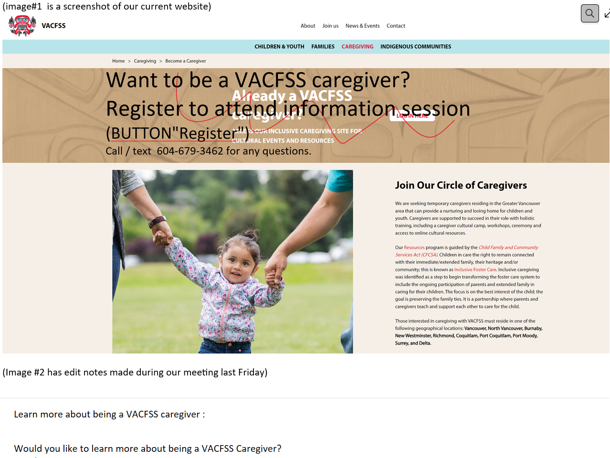
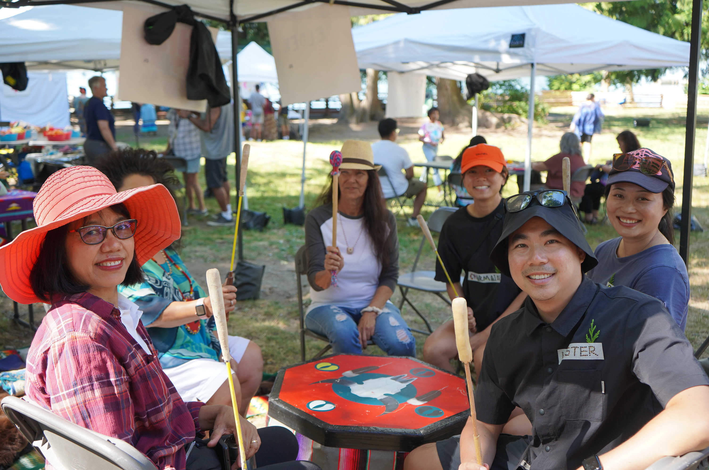
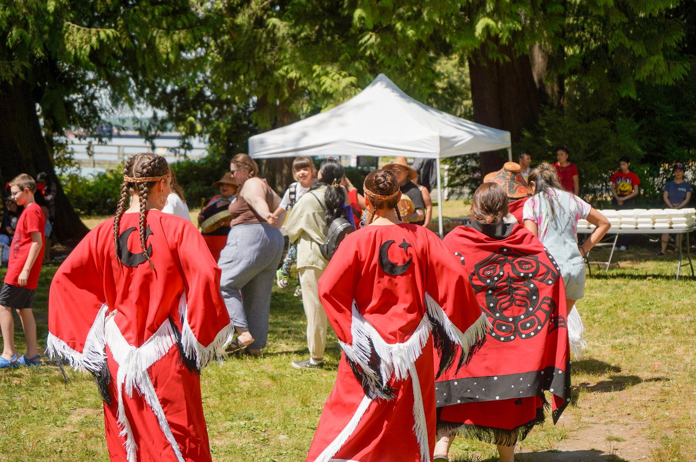
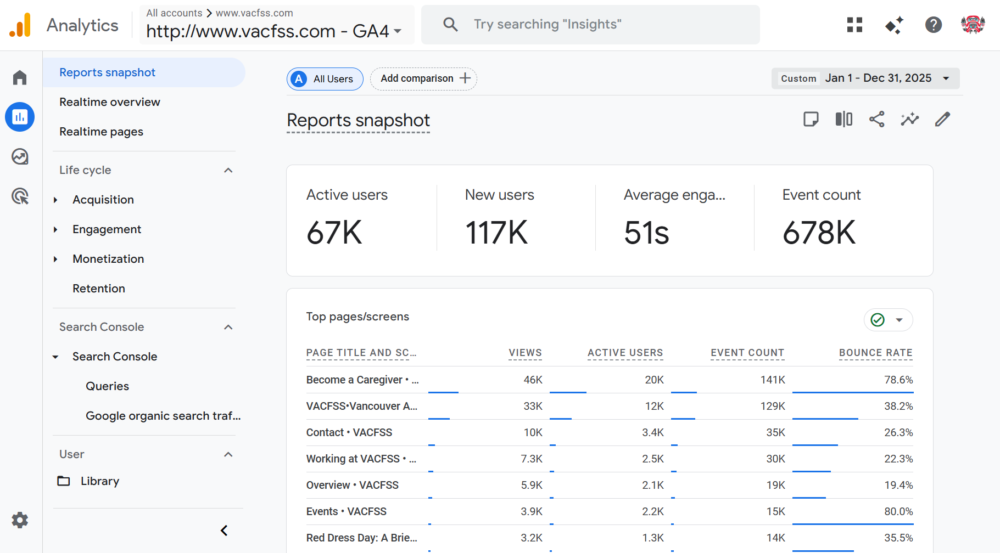
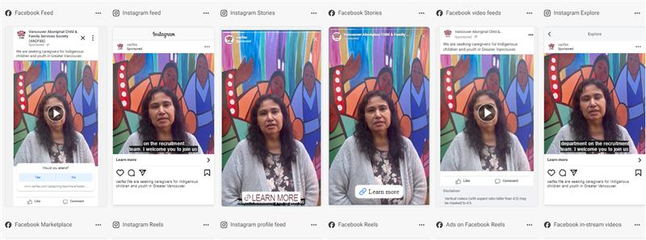

At a Glance
Problem: Potential caregivers were arriving from ads, but the organization's most important page was buried. Even staff who used the site regularly needed over 2 minutes to find it.
What I did: Interviewed staff, reviewed how past caregivers first made contact, and turned the findings into three fixes: a more direct path to the page, scannable content, and real community photography.
Outcome: Caregiver inquiries rose 566% in the 12 months after the March 2024 page and ad changes. Inquiries from sources other than Facebook rose 134%.
Validation: Follow-up caregiver interviews in 2026 confirmed that the direct ad path removed the navigation barrier and that the more descriptive content helped them take the next step.
Background
VACFSS (Vancouver Aboriginal Child and Family Services Society) supports Indigenous children and families in Vancouver. A critical part of their work is recruiting foster and family caregivers — yet the website's path to that information was buried, text-heavy, and filled with stock photography that looked identical to every other social services organization.
I conducted two rounds of research, staff interviews in 2024 and caregiver interviews in 2026, to measure the impact of navigation and content changes on the site's core goal: getting a potential caregiver to reach out.
Round 1: Staff Interviews (2024)
I started by testing with 5 VACFSS staff members (2 communications employees, 2 social workers, and 1 caregiver), people who use the site regularly. The core research question was whether even internal users could efficiently navigate to the organization's most important conversion page.
Critical Finding: 2+ Minutes to Navigate
Every participant took over 2 minutes to locate the Becoming a Caregiver page, despite working at the organization. The cause was the site structure. If staff couldn't find it quickly, a potential caregiver arriving from an ad had almost no chance.
Supporting Data: Referral Pattern (2024)
3 out of 5 past caregivers were directly referred by someone they knew, so they never needed to navigate the site. Word of mouth was carrying recruitment.
Referrals hid the navigation problem because those people already knew where to call.
Pain Points Identified
Navigation Depth to a Critical Page
The Becoming a Caregiver page was buried several levels deep with no prominent calls to action on the homepage or top-level navigation. For someone arriving cold from a Facebook ad, the path was invisible.
Lengthy, Unbroken Blocks of Text
The site relied on dense paragraphs with no headers, callouts, or scannable structure, so potential caregivers couldn't quickly find answers.
Stock Photography That Erased Identity
The site's generic stock images looked like those of dozens of other social services organizations. They did not represent an Indigenous-led organization whose mission centres on community connection.
Before & After: The Caregiver Page
The biggest improvement was restructuring the Becoming a Caregiver page: shorter text blocks, clear visual hierarchy, and a prominent call to action.

Original page · Screenshot for research purposes
Redesigned page on mobile · © Angela Shen
Design Decision: Real Community Photography
I replaced generic stock photography with on-site images of the people and culture VACFSS serves.


.png)
© Angela Shen
Results
Caregiver form inquiries in the 12 months after the March 2024 changes, compared with the 12 months before. Ads also began linking directly to the page, and Facebook accounted for most of the increase, so this result reflects the combined fix.
+566%
Caregiver inquiries in the 12 months after the changes
+134%
Inquiries from sources other than Facebook, same period
+170%
Monthly inquiries in Mar–Oct 2026 compared with before the changes

Google Analytics, 2025: Become a Caregiver was the site's top page

Facebook referral volume: 31K and 28K referrals to the site
Round 2: Caregiver Interviews (2026)
In 2026, I followed up with caregivers who had come through the Facebook recruitment pipeline to understand their actual experience navigating from ad to inquiry.
Finding: Direct Ad Path Removed the Navigation Problem
Of the caregivers interviewed in 2026, 3 had come directly through the Facebook page. When asked about finding the caregiver page, they said the process felt simple because the ad linked directly to it, removing the navigation barrier entirely.
They said the more descriptive content on the redesigned page answered their questions and gave them enough context to take the next step.
Both fixes worked: the ad reduced navigation friction, and the page content turned interest into action.
Key Takeaways
Staff who knew the site still needed 2+ minutes, so the problem was the site structure. The fix had two parts: make the page discoverable (direct ad links and improved navigation) and make it worth staying on (restructured content and on-site photography).
Inquiries rose 566% in the 12 months after the changes, and 134% from sources other than Facebook, which suggests the page and the ads worked together.
On-site photography shows the real community of an Indigenous-led organization, which builds the trust someone needs before becoming a caregiver.
Limits of this evidence: Both interview rounds were small, starting with 5 staff in 2024, and the ad path and page content changed together. The next step would be task-based testing with people who have never seen the site.
The Ad Campaign
The UX work was paired with an active recruitment ad campaign across Meta and Google. Understanding how users were arriving at the site shaped where the UX improvements needed to be focused, particularly on the first landing experience after clicking a Facebook ad.

2024 campaign performance

2025 campaign performance

Recruitment ads in market, driving traffic to the pages being redesigned
Day in the Life of a Social Worker: Recruitment Video
I researched, produced, and edited a recruitment video that shows prospective social work students what the role is like before they commit.
Day in the Life of a Social Worker, produced for VACFSS caregiver and staff recruitment
200+
Organic views with no paid promotion
Organic
No ad spend, distributed through social and in-person channels
Live
Screened at social work college recruitment sessions
Production Process
Market Research
I researched "day in the life" recruitment videos across social services, healthcare, and non-profit sectors. Most failed because they felt scripted or promotional, so I set the benchmark at showing the real work.
Equipment Decisions
Based on the research, I bought equipment for a handheld, documentary-style look.
Co-Direction & Scripting
I co-directed and scripted the video with VACFSS staff. The script mapped the questions a prospective social worker would have, then answered them with real footage.
Filming & Editing
I filmed and edited the video, ending on the emotional case for the role.
How It Was Used
The video was screened during in-person recruitment visits to social work colleges to preview the role day-to-day. Students who attended could share it, and students who didn't could still watch it.
Published Writing: Honouring the Journey of Our Youth
As part of the communications role, I wrote and photographed coverage of VACFSS's annual youth transition ceremony, a gathering at the Native Education College honouring youth turning 19 as they move into adulthood.
.png)
On-site photography from the ceremony · © Angela Shen
About the Article
Written and photographed on-site, the piece documents the blanket ceremony, coin-giving ceremony, and performances by Indigenous artists from multiple nations. A Youth Advisory Committee member's remarks on "pride in their resilience and Indigenous roots" anchors the piece.
Published on the VACFSS website on June 11, 2024, by Angela Shen, Communications and PR Assistant.
Read the Article ↗Short Video: Annual Cedar Headband Making Workshop
A short cultural documentation video produced for the VACFSS annual cedar headband making workshop, filmed, edited, and published as part of the ongoing communications work.
Cedar headband making workshop, filmed and edited by Angela Shen for VACFSS · © Angela Shen
Context
Cedar headbands carry cultural significance for the communities VACFSS serves and were part of the youth transition ceremony covered above. I documented the practice accurately and respectfully.
View on VACFSS ↗Published Interview: Elder April Bennett, 28th Anniversary
I conducted and wrote a staff spotlight interview with Elder April Bennett marking her 28th anniversary at VACFSS, documenting her contributions to restorative practice and community care over nearly three decades.
.png)
Photo from the VACFSS community — Angela Shen
About the Piece
A staff spotlight interview in the Restorative Practice section of the VACFSS website, honouring Elder April Bennett's 28 years of service. The piece centres her voice.
Read the Interview ↗